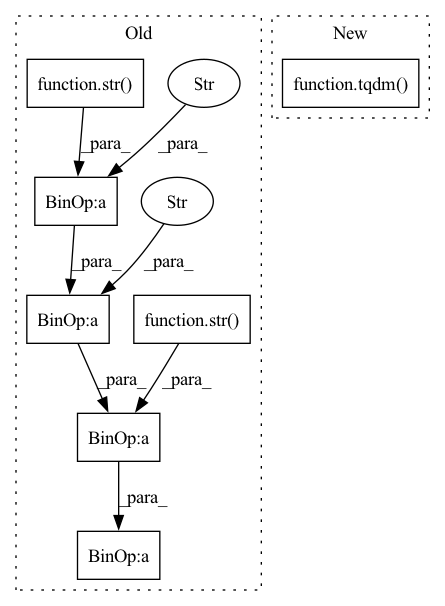

Pattern ID :27770
Before Change
// Resizing it to 256*256 to save the disk space and fit into the model
frame = cv2.resize(frame, (456, 256), interpolation=cv2.INTER_CUBIC)
// Saves image of the current frame in jpg file
name = "ImageData/trainingData/" + str(file_name) + "/frame" + str( count) + ".jpg"
cv2.imwrite(name, frame)
if cv2.waitKey(1) & 0xFF == ord("q"):After Change
def video2img_train(zipfile_train, save_to="image_data/train_data"):
// Running a loop through all the zipped training file to extract all video and then extract 100 frames from each.
for i in tqdm( range(1, 76)) :
if i < 10:
zipfilename = "training80_0" + str(i) + ".zip"
else:In pattern: SUPERPATTERN
Frequency: 3
Non-data size: 7
Instances Fragment ID: 82249895
Project Name: liaorongfan/deeppersonality
Commit Name: ce122760e5cb05dd7588040c8cf6e3fac099abf9
Time: 2021-09-21
Author: 15670381505@163.com
File Name: dpcv/data/utils/video_to_image.py
M Class Name: AnonimousClass
N Class Name: AnonimousClass
M Method Name: video2img_train(2)
N Method Name: video2img_train(1)
M Parent Class:
N Parent Class:
M File Name: dpcv/data/utils/video_to_image.py
N File Name: dpcv/data/utils/video_to_image.py
M Start Line: 56
M End Line: 100
N Start Line: 56
N End Line: 96
Before Change
total_loss += loss
waste_time = time.time() - start_time
print("\nEpoch:"+ str(epoch+1) + "/" + str(Epoch))
print("iter:" + str(iteration) + "/" + str(epoch_size) + " || Total Loss: %.4f || %.4fs/step" % (total_loss/(iteration+1),waste_time))
start_time = time.time()
print("Start Validation")
After Change
total_loss = 0
val_loss = 0
start_time = time.time()
with tqdm(total=epoch_size,desc=f"Epoch {epoch + 1}/{Epoch}",postfix=dict,mininterval=0.3) as pbar:
for iteration, batch in enumerate(gen):
if iteration >= epoch_size:
break
Fragment ID: 82249894
Project Name: bubbliiiing/yolo3-pytorch
Commit Name: d67b456f0551b5565d1be3339b446ca601d1078c
Time: 2020-07-28
Author: 47347516+bubbliiiing@users.noreply.github.com
File Name: train.py
M Class Name: AnonimousClass
N Class Name: AnonimousClass
M Method Name: fit_ont_epoch(9)
N Method Name: fit_ont_epoch(9)
M Parent Class:
N Parent Class:
M File Name: train.py
N File Name: train.py
M Start Line: 20
M End Line: 71
N Start Line: 28
N End Line: 85
Before Change
total_loss += loss
waste_time = time.time() - start_time
print("\nEpoch:"+ str(epoch+1) + "/" + str(Epoch))
print("iter:" + str(iteration) + "/" + str(epoch_size) + " || Total Loss: %.4f || %.4fs/step" % (total_loss/(iteration+1),waste_time))
start_time = time.time()
// 将loss写入tensorboard，下面注释的是每个世代保存一次
// writer.add_scalar("Train_loss", total_loss/(iteration+1), epoch)
After Change
total_loss = 0
val_loss = 0
start_time = time.time()
with tqdm(total=epoch_size,desc=f"Epoch {epoch + 1}/{Epoch}",postfix=dict,mininterval=0.3) as pbar:
for iteration, batch in enumerate(gen):
if iteration >= epoch_size:
break
Fragment ID: 82249892
Project Name: bubbliiiing/yolov4-pytorch
Commit Name: c1c7677c0d9837682dfc807b39415bb4b9a1cb3c
Time: 2020-07-28
Author: 47347516+bubbliiiing@users.noreply.github.com
File Name: train_with_tensorboard.py
M Class Name: AnonimousClass
N Class Name: AnonimousClass
M Method Name: fit_ont_epoch(10)
N Method Name: fit_ont_epoch(10)
M Parent Class:
N Parent Class:
M File Name: train_with_tensorboard.py
N File Name: train_with_tensorboard.py
M Start Line: 37
M End Line: 96
N Start Line: 45
N End Line: 113